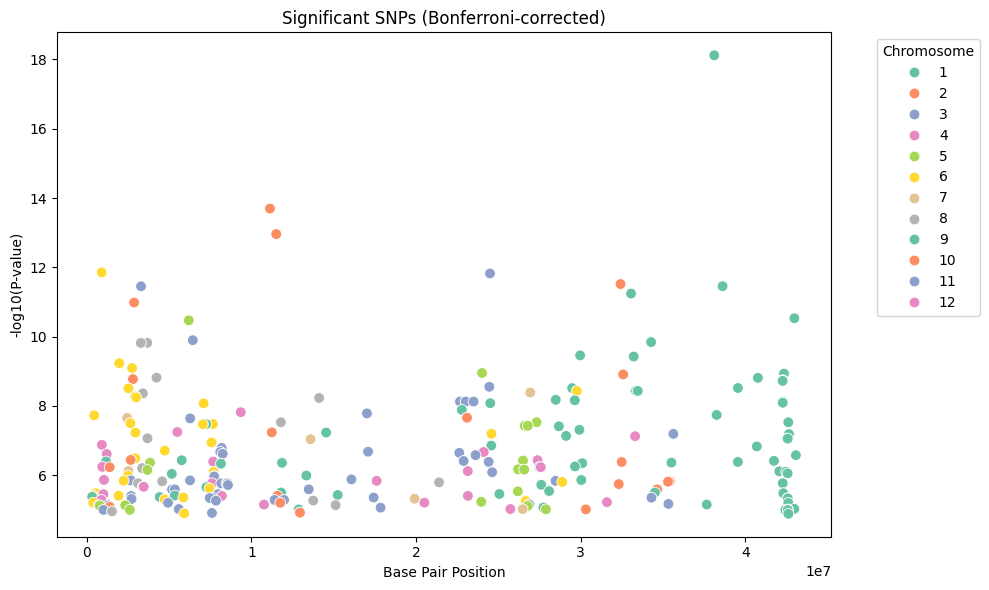
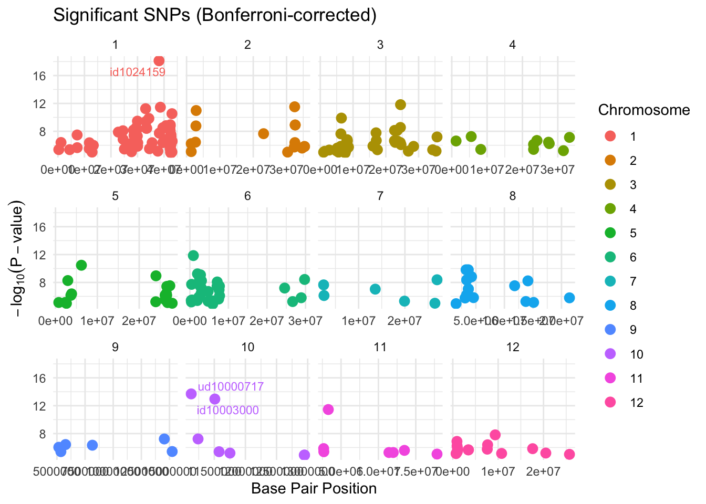

Q&A 19 How do you visualize significant SNPs from a Bonferroni-corrected GWAS results file?
19.1 Explanation
After applying a Bonferroni correction in a GWAS analysis, we are left with a set of SNPs that meet a stringent significance threshold. Visualizing these SNPs helps identify genomic regions of interest and patterns of association. A common approach is to create a Manhattan-style scatter plot showing:
- Chromosome (CHR) or base pair position (BP) on the x-axis
- –log₁₀(P-value) on the y-axis to emphasize stronger associations
- Points optionally colored by chromosome for interpretability
- Labels for highly significant SNPs
This visualization provides a clear overview of which SNPs are driving the strongest signals in your study.
19.2 Python Code
import pandas as pd
import matplotlib.pyplot as plt
import seaborn as sns
import numpy as np
# Load the SNP data
snps = pd.read_csv("data/significant_snps_bonferroni.csv")
# Compute -log10(P-value)
snps["logP"] = -np.log10(snps["P_value"])
# Plot SNP significance by position and chromosome
plt.figure(figsize=(10, 6))
sns.scatterplot(
data=snps,
x="BP",
y="logP",
hue="CHR",
palette="Set2",
s=60
)
plt.title("Significant SNPs (Bonferroni-corrected)")
plt.xlabel("Base Pair Position")
plt.ylabel("-log10(P-value)")
plt.legend(title="Chromosome", bbox_to_anchor=(1.05, 1), loc="upper left")
plt.tight_layout()
plt.show()
19.3 R Code
# Load required packages
library(tidyverse)
library(ggrepel)
# Read the SNP data
snps <- read_csv("data/significant_snps_bonferroni.csv")
# Compute -log10(P-value)
snps <- snps %>%
mutate(logP = -log10(P_value))
# Plot with chromosome coloring and labels for strong hits
ggplot(snps, aes(x = BP, y = logP, color = as.factor(CHR))) +
geom_point(size = 3) +
geom_text_repel(
data = snps %>% filter(logP > 12),
aes(label = SNP),
size = 3
) +
facet_wrap(~CHR, scales = "free_x") +
labs(
title = "Significant SNPs (Bonferroni-corrected)",
x = "Base Pair Position",
y = expression(-log[10](P-value)),
color = "Chromosome"
) +
theme_minimal()
✅ Takeaway: This visualization helps you inspect which SNPs reach genome-wide significance and how they are distributed across chromosomes. Labeling key hits adds insight into potential candidate loci.